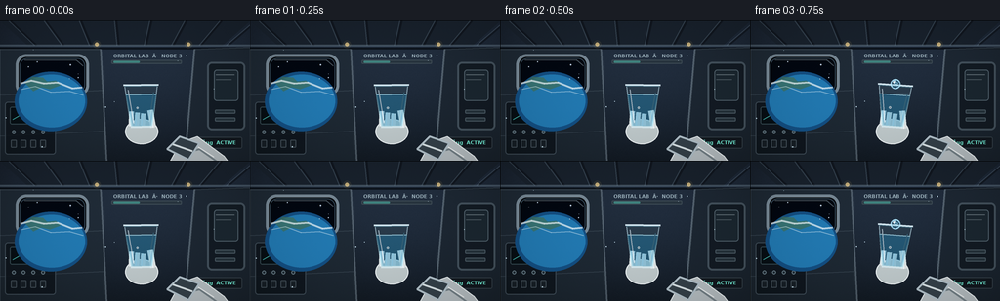
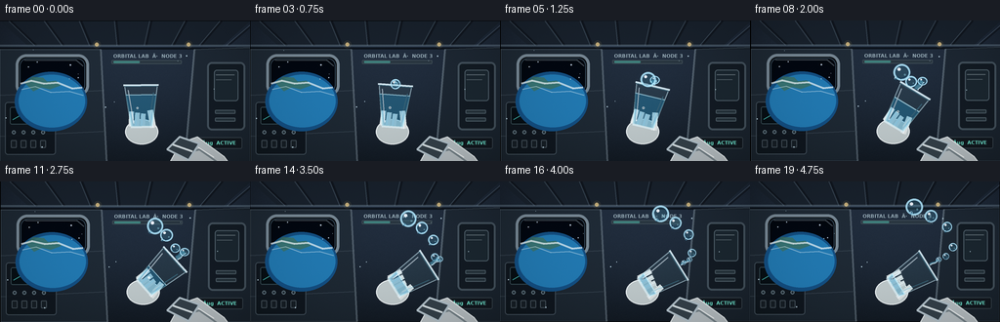
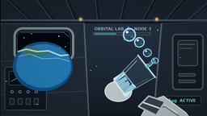

CODING AGENTS AS PIXEL WORLD MODELS
traex/GPT-5.6-Sol · phygen_001
点击播放 · 原生 RGB 像素
逐轮保存的候选
回放视频、检查图与代码变化。
每份候选均可单独播放。实际图片检查记录在下方工具轨迹中。
候选 01播放与检查图
点击播放 · 原生 RGB 像素


展开代码变化
--- 上一保存版本
+++ 本次保存版本
@@ -0,0 +1,279 @@
+from pathlib import Path
+import json, math
+import numpy as np
+from PIL import Image, ImageDraw, ImageFont, ImageFilter
+import artifact_io
+
+ROOT = Path(__file__).resolve().parent
+SPEC = json.loads((ROOT/'task_spec.json').read_text())
+W,H,N = SPEC['width'], SPEC['height'], SPEC['frames']
+S=4
+WW,HH=W*S,H*S
+rng=np.random.default_rng(17)
+
+def scp(p): return tuple(int(round(v*S)) for v in p)
+def smooth(a,b,x):
+ z=max(0,min(1,(x-a)/(b-a)))
+ return z*z*(3-2*z)
+def lerp(a,b,t): return a+(b-a)*t
+
+def font(size,bold=False):
+ path='/usr/share/fonts/truetype/dejavu/DejaVuSans-Bold.ttf' if bold else '/usr/share/fonts/truetype/dejavu/DejaVuSans.ttf'
+ try:return ImageFont.truetype(path,size*S)
+ except:return ImageFont.load_default()
+
+def poly(draw, pts, fill, outline=None, width=1):
+ draw.polygon([scp(p) for p in pts],fill=fill)
+ if outline: draw.line([scp(p) for p in pts+[pts[0]]],fill=outline,width=width*S,joint='curve')
+def line(draw, pts, fill, width=1): draw.line([scp(p) for p in pts],fill=fill,width=max(1,width*S),joint='curve')
+def ellipse(draw, box, fill, outline=None, width=1): draw.ellipse(scp(box),fill=fill,outline=outline,width=width*S)
+def rect(draw, box, fill, outline=None, width=1,r=0):
+ if r: draw.rounded_rectangle(scp(box),radius=r*S,fill=fill,outline=outline,width=width*S)
+ else: draw.rectangle(scp(box),fill=fill,outline=outline,width=width*S)
+
+def make_background():
+ y,x=np.mgrid[0:HH,0:WW]
+ # blue-gray station light, vignetted and softly textured
+ base=np.zeros((HH,WW,3),np.float32)
+ base[:,:,0]=20+18*(1-y/HH)+5*x/WW
+ base[:,:,1]=28+23*(1-y/HH)+7*x/WW
+ base[:,:,2]=36+31*(1-y/HH)+10*x/WW
+ vign=1-.42*((x-WW*.49)/(WW*.72))**2-.28*((y-HH*.5)/(HH*.72))**2
+ base*=np.clip(vign[:,:,None],.55,1)
+ noise=rng.normal(0,1.7,(HH,WW,1))
+ base=np.clip(base+noise,0,255).astype(np.uint8)
+ im=Image.fromarray(base,'RGB'); d=ImageDraw.Draw(im,'RGBA')
+ # ribbed ceiling and tunnel perspective
+ poly(d,[(0,0),(256,0),(228,25),(28,25)],(25,34,44,255))
+ for xx in [9,45,81,117,153,189,225,261]:
+ line(d,[(xx,0),(128+(xx-128)*.78,25)],(92,110,124,100),1)
+ line(d,[(xx+2,0),(130+(xx-128)*.78,25)],(7,11,16,120),2)
+ line(d,[(0,25),(256,25)],(154,181,194,75),2)
+ line(d,[(0,28),(256,28)],(3,7,11,170),2)
+ # side wall panel seams
+ poly(d,[(0,29),(103,29),(109,144),(0,144)],(32,43,52,185),(100,116,125,100),1)
+ for yy in [76,118]: line(d,[(0,yy),(106,yy-5)],(110,128,138,65),1)
+ line(d,[(103,29),(109,144)],(145,161,169,75),2)
+ poly(d,[(199,29),(256,27),(256,144),(189,144)],(29,39,48,190),(112,130,139,80),1)
+ line(d,[(199,29),(189,144)],(151,169,177,85),2)
+ # equipment rack, screen and switches
+ rect(d,(5,83,57,137),(13,20,26,210),(105,123,133,130),1,3)
+ rect(d,(10,88,51,106),(7,15,20,255),(70,94,101,180),1,2)
+ line(d,[(13,101),(20,97),(25,99),(31,92),(36,96),(48,91)],(78,220,203,180),1)
+ for i in range(4):
+ ellipse(d,(12+i*10,112,16+i*10,116),(32,44,52,255),(150,173,180,150),1)
+ rect(d,(11+i*10,122,17+i*10,130),(23,31,37,255),(112,129,136,120),1,1)
+ # large right cargo hatch details
+ rect(d,(212,42,251,112),(17,25,32,210),(106,125,135,140),2,5)
+ rect(d,(219,50,244,82),(28,40,48,230),(125,145,153,130),1,3)
+ line(d,[(221,55),(240,55)],(184,199,201,100),1)
+ line(d,[(221,60),(237,60)],(184,199,201,70),1)
+ for yy in [91,99]:
+ rect(d,(220,yy,241,yy+4),(40,54,61,220),(128,148,154,100),1,1)
+ # window bezel
+ rect(d,(16,34,91,77),(8,12,16,255),(157,179,189,190),3,11)
+ rect(d,(20,38,87,73),(2,7,14,255),(62,83,97,200),1,8)
+ # space through window
+ ellipse(d,(23,40,84,72),(2,7,16,255))
+ for sx,sy,rr in [(29,47,.5),(72,45,.7),(80,58,.5),(38,42,.4),(67,67,.5)]: ellipse(d,(sx-rr,sy-rr,sx+rr,sy+rr),(220,240,255,210))
+ # Earth limb behind lower left of window
+ ellipse(d,(15,52,89,113),(20,79,127,255))
+ ellipse(d,(19,55,87,109),(34,121,173,255))
+ # continent / cloud bands clipped approximately within visible portion
+ poly(d,[(25,63),(33,57),(44,58),(48,62),(57,61),(62,66),(51,70),(42,68),(34,72)],(64,113,87,180))
+ line(d,[(21,64),(32,61),(45,64),(59,63),(74,69),(84,68)],(238,247,244,180),2)
+ line(d,[(22,70),(36,67),(52,73),(71,72),(85,76)],(236,246,248,120),1)
+ # reassert rounded-ish dark top border and glass reflection
+ line(d,[(25,40),(78,40),(85,46)],(204,226,235,80),1)
+ # labels / warning marks
+ d.text(scp((116,33)),'ORBITAL LAB · NODE 3',font=font(5,bold=True),fill=(150,171,178,150))
+ rect(d,(114,40,186,44),(42,55,62,200),(115,132,138,70),1,1)
+ rect(d,(116,41,143,43),(76,172,155,170),r=1)
+ rect(d,(202,119,248,131),(16,22,27,210),(100,118,127,100),1,2)
+ d.text(scp((207,122)),'µg ACTIVE',font=font(5,bold=True),fill=(112,231,203,210))
+ # amber utility lights
+ for xx in [99,193]:
+ ellipse(d,(xx-4,20,xx+4,28),(223,185,102,25))
+ ellipse(d,(xx-2,22,xx+2,26),(255,221,144,180))
+ return im
+
+BG=make_background()
+
+def Tpoint(bottom,u,v,x,y): return (bottom[0]+v[0]*x+u[0]*y,bottom[1]+v[1]*x+u[1]*y)
+
+def transformed(bottom,ang,x,y):
+ u=(math.cos(ang),math.sin(ang)); v=(-u[1],u[0])
+ return Tpoint(bottom,u,v,x,y)
+
+def draw_glow(base, center, radius, color, alpha=100):
+ ov=Image.new('RGBA',(WW,HH),(0,0,0,0)); od=ImageDraw.Draw(ov,'RGBA')
+ cx,cy=center
+ for k in range(8,0,-1):
+ rr=radius*(.55+k*.12)
+ a=int(alpha*(1-k/9)**2*.6)
+ ellipse(od,(cx-rr,cy-rr,cx+rr,cy+rr),(*color,a))
+ ov=ov.filter(ImageFilter.GaussianBlur(radius*S*.55))
+ base.alpha_composite(ov)
+
+def water_blob(base,cx,cy,r,stretch=1.0,tilt=0.0,alpha=210):
+ # glossy translucent free-floating water with bright rim and lens-like core
+ draw_glow(base,(cx,cy),r,(64,189,234),45)
+ ov=Image.new('RGBA',(WW,HH),(0,0,0,0)); d=ImageDraw.Draw(ov,'RGBA')
+ # concentric optical body
+ for k in range(12,0,-1):
+ q=k/12
+ rr=r*q
+ col=(73,175,211,int(alpha*(.055+.05*(1-q))))
+ ellipse(d,(cx-rr*stretch,cy-rr,cx+rr*stretch,cy+rr),col)
+ ellipse(d,(cx-r*stretch,cy-r,cx+r*stretch,cy+r),(49,148,192,46),(181,238,255,220),max(1,S//2))
+ ellipse(d,(cx-r*.75*stretch,cy-r*.72,cx+r*.78*stretch,cy+r*.75),(96,201,231,35),(42,111,144,80),1)
+ # caustic dark lower edge and crisp speculars
+ line(d,[(cx-r*.62,cy+r*.53),(cx-r*.1,cy+r*.75),(cx+r*.53,cy+r*.46)],(20,90,126,100),1)
+ ellipse(d,(cx-r*.53,cy-r*.58,cx-r*.13,cy-r*.18),(245,253,255,230))
+ ellipse(d,(cx-r*.38,cy-r*.43,cx-r*.22,cy-r*.27),(255,255,255,245))
+ ellipse(d,(cx+r*.25,cy+r*.18,cx+r*.48,cy+r*.4),(155,235,250,120))
+ base.alpha_composite(ov)
+
+def draw_stream(base,p0,p1,width,phase):
+ ov=Image.new('RGBA',(WW,HH),(0,0,0,0)); d=ImageDraw.Draw(ov,'RGBA')
+ # cubic sample with a gently necking, surface-tension stream
+ dx=p1[0]-p0[0]; dy=p1[1]-p0[1]; L=max(1,math.hypot(dx,dy)); nx=-dy/L; ny=dx/L
+ pts=[]
+ for j in range(25):
+ q=j/24
+ wig=math.sin(q*math.pi*2+phase)*.6*math.sin(math.pi*q)
+ pts.append((p0[0]+dx*q+nx*wig,p0[1]+dy*q+ny*wig))
+ # broad transparent body, darker refraction, bright edges
+ line(d,pts,(73,183,221,105),max(2,int(width)))
+ line(d,pts,(112,217,243,115),max(1,int(width*.58)))
+ off=[(x+nx*width*.32,y+ny*width*.32) for x,y in pts]
+ line(d,off,(226,250,255,220),max(1,int(width*.16)))
+ base.alpha_composite(ov)
+
+def draw_frame(i):
+ t=i/(N-1)
+ # tiny floating camera drift
+ dx=1.0*math.sin(t*math.pi*1.2); dy=.5*math.cos(t*math.pi)
+ bg=BG.transform((WW,HH),Image.AFFINE,(1,0,-dx*S,0,1,-dy*S),resample=Image.Resampling.BICUBIC)
+ im=bg.convert('RGBA'); d=ImageDraw.Draw(im,'RGBA')
+ # defocused floating dust reinforces cabin volume
+ for k in range(12):
+ x=(31+k*37 + i*(.15+(k%3)*.09))%250+3
+ y=30+(k*29%104)+math.sin(i*.17+k)*.8
+ r=.25+(k%4)*.12
+ ellipse(d,(x-r,y-r,x+r,y+r),(200,227,235,55))
+
+ # controlled slow tilt around the hand/cup base
+ ease=smooth(0.02,.78,t)
+ ang=math.radians(lerp(-91,-32,ease))
+ bottom=(145+1.5*math.sin(t*math.pi),110-.8*ease)
+ u=(math.cos(ang),math.sin(ang)); v=(-u[1],u[0])
+ mouth=Tpoint(bottom,u,v,0,45)
+
+ # astronaut sleeve and hand behind cup, rotates subtly with wrist
+ wrist=(196,151)
+ palm=Tpoint(bottom,u,v,2,-1)
+ # sleeve from lower-right; layered fabric and cuff
+ poly(d,[(174,145),(185,125),(202,119),(229,139),(238,151)],(183,191,190,255),(229,235,231,170),1)
+ line(d,[(184,137),(204,132),(224,146)],(116,129,132,150),2)
+ line(d,[(197,126),(219,140)],(235,239,234,100),1)
+ # dark wrist joint and cuff rings
+ poly(d,[(171,132),(184,119),(204,126),(193,143)],(53,65,72,255),(177,192,196,200),2)
+ line(d,[(177,127),(197,134)],(215,225,223,130),2)
+ # glove palm supporting base
+ ellipse(d,(bottom[0]-17,bottom[1]-9,bottom[0]+17,bottom[1]+17),(190,200,197,255),(236,241,237,200),1)
+ # fingers curled around cup lower section
+ for j in range(3):
+ p1=Tpoint(bottom,u,v,-11+j*6,2+j*.3)
+ p2=Tpoint(bottom,u,v,-10+j*6,17-j*1.2)
+ line(d,[p1,p2],(211,219,215,255),5)
+ line(d,[(p1[0]-1,p1[1]),(p2[0]-1,p2[1])],(244,247,242,150),1)
+ # thumb across front
+ q1=Tpoint(bottom,u,v,12,0); q2=Tpoint(bottom,u,v,9,18)
+ line(d,[q1,q2],(222,228,223,255),6)
+ line(d,[q1,q2],(251,251,246,120),1)
+
+ # CUP body glass: rear fill first
+ ov=Image.new('RGBA',(WW,HH),(0,0,0,0)); cd=ImageDraw.Draw(ov,'RGBA')
+ cup=[Tpoint(bottom,u,v,-11,1),Tpoint(bottom,u,v,11,1),Tpoint(bottom,u,v,17,44),Tpoint(bottom,u,v,-17,44)]
+ poly(cd,cup,(137,207,222,24),(205,239,245,150),1)
+ # remaining water volume; initially most of cup, rapidly leaves after lip reaches angle
+ out=smooth(.18,.93,t)
+ level=lerp(34,8,out)
+ half=11+(17-11)*(level/44)
+ wat=[Tpoint(bottom,u,v,-10.2,2),Tpoint(bottom,u,v,10.2,2),Tpoint(bottom,u,v,half,level),Tpoint(bottom,u,v,-half,level)]
+ poly(cd,wat,(45,151,195,105),(129,224,244,110),1)
+ # curved inner meniscus/surface
+ surf=Tpoint(bottom,u,v,0,level)
+ mw=2*half; mh=4.0
+ # oriented meniscus approximated as thick cross-cup line
+ a=Tpoint(bottom,u,v,-half,level); b=Tpoint(bottom,u,v,half,level)
+ line(cd,[a,b],(193,242,252,190),1)
+ # trapped internal highlight and bubbles
+ line(cd,[Tpoint(bottom,u,v,-8,5),Tpoint(bottom,u,v,-13,39)],(233,251,255,160),1)
+ line(cd,[Tpoint(bottom,u,v,8,6),Tpoint(bottom,u,v,13,36)],(95,182,206,100),1)
+ if i<12:
+ bb=Tpoint(bottom,u,v,-4,level*.6)
+ ellipse(cd,(bb[0]-1.2,bb[1]-1.2,bb[0]+1.2,bb[1]+1.2),(154,229,244,55),(231,253,255,170),1)
+ # rim as oriented parallel lines/ellipse impression
+ ra=Tpoint(bottom,u,v,-18,44); rb=Tpoint(bottom,u,v,18,44)
+ line(cd,[ra,rb],(229,250,253,225),2)
+ ra2=Tpoint(bottom,u,v,-17,42.7); rb2=Tpoint(bottom,u,v,17,42.7)
+ line(cd,[ra2,rb2],(80,151,170,120),1)
+ # base glass
+ line(cd,[Tpoint(bottom,u,v,-11,1),Tpoint(bottom,u,v,11,1)],(225,246,248,175),2)
+ im.alpha_composite(ov)
+
+ # liquid emerges once tilt is underway: neck followed by pinched droplets
+ start=smooth(.12,.25,t)
+ if start>0:
+ # Attached bulging meniscus at mouth
+ neck_len=lerp(2.0,11.5,smooth(.13,.45,t))
+ # stream direction combines cup normal with rightward inherited motion
+ du=(u[0]*.86+.14,u[1]*.86-.02)
+ norm=math.hypot(*du); du=(du[0]/norm,du[1]/norm)
+ p0=(mouth[0]+du[0]*1,mouth[1]+du[1]*1)
+ p1=(mouth[0]+du[0]*neck_len,mouth[1]+du[1]*neck_len)
+ # stream attenuates after most water has escaped but leaves a tether
+ streamw=lerp(5.8,2.1,smooth(.54,.95,t))*start
+ draw_stream(im,p0,p1,max(1.4,streamw),i*.55)
+ water_blob(im,p1[0],p1[1],max(2.4,streamw*.72),1.18,alpha=185)
+
+ # droplets emitted at distinct times; all continue drifting instead of falling
+ emissions=[(3,8.5,2.25,-.10),(6,6.4,2.65,.16),(9,5.2,3.0,-.22),(12,4.2,3.4,.12),(15,3.2,3.7,-.1)]
+ for idx,(release,radius,speed,bias) in enumerate(emissions):
+ age=i-release
+ if age<0: continue
+ tr=release/(N-1); er=smooth(.02,.78,tr)
+ ea=math.radians(lerp(-91,-32,er))
+ eu=(math.cos(ea),math.sin(ea)); ev=(-eu[1],eu[0])
+ eb=(145+1.5*math.sin(tr*math.pi),110-.8*er)
+ em=Tpoint(eb,eu,ev,0,45)
+ vel=(eu[0]*speed+1.05,eu[1]*speed-.10)
+ cx=em[0]+vel[0]*age+math.sin(age*.33+idx)*.35
+ cy=em[1]+vel[1]*age+bias*age+math.sin(age*.42+idx)*.28
+ rr=radius*(.6+.4*smooth(0,3,age))
+ water_blob(im,cx,cy,rr,1.0+0.04*math.sin(age*.5),alpha=215)
+ # occasional satellite bead from breakup
+ if age>3 and idx<3:
+ sx=cx-rr*.85+age*.25; sy=cy+rr*.72+idx*.5
+ water_blob(im,sx,sy,max(1.15,rr*.19),1.0,alpha=180)
+
+ # close foreground subtle corner vignette and cool grade
+ arr=np.asarray(im.convert('RGB')).astype(np.float32)
+ yy,xx=np.mgrid[0:HH,0:WW]
+ vig=np.clip(1-.16*((xx-WW/2)/(WW*.66))**2-.12*((yy-HH/2)/(HH*.62))**2,.70,1)
+ arr*=vig[:,:,None]
+ # slight cyan highlight lift and film grain
+ arr[:,:,2]*=1.025
+ grain=rng.normal(0,.55,arr.shape[:2])[:,:,None]
+ arr=np.clip(arr+grain,0,255).astype(np.uint8)
+ frame=Image.fromarray(arr).resize((W,H),Image.Resampling.LANCZOS)
+ return np.asarray(frame,dtype=np.uint8)
+
+def main():
+ frames=np.stack([draw_frame(i) for i in range(N)],axis=0)
+ assert frames.shape==(N,H,W,3) and frames.dtype==np.uint8
+ artifact_io.save(frames,ROOT)
+
+if __name__=='__main__': main()
候选 02播放与检查图
点击播放 · 原生 RGB 像素

展开代码变化
--- 上一保存版本
+++ 本次保存版本
@@ -42,7 +42,7 @@
base*=np.clip(vign[:,:,None],.55,1)
noise=rng.normal(0,1.7,(HH,WW,1))
base=np.clip(base+noise,0,255).astype(np.uint8)
- im=Image.fromarray(base,'RGB'); d=ImageDraw.Draw(im,'RGBA')
+ im=Image.fromarray(base); d=ImageDraw.Draw(im,'RGBA')
# ribbed ceiling and tunnel perspective
poly(d,[(0,0),(256,0),(228,25),(28,25)],(25,34,44,255))
for xx in [9,45,81,117,153,189,225,261]:
可观测工具轨迹
实际执行的命令与返回图片。
命令 1exit 0
/bin/bash -lc "cat prompt.txt && printf '\\n--- GENERATION_RULES ---\\n' && cat GENERATION_RULES.md"
命令 2exit 0
/bin/bash -lc "cat task_spec.json && printf '\\n--- FILES ---\\n' && find . -maxdepth 2 -type f -printf '%p\\n' | sort"
命令 3exit 0
/bin/bash -lc "command -v ffmpeg; command -v blender; command -v python3; python3 - <<'PY' mods=['numpy','PIL','cv2','imageio','moviepy'] for m in mods: try: x=__import__(m); print(m,'OK',getattr(x,'__version__','')) except Exception as e: print(m,'NO',e) PY"
命令 4exit 0
/bin/bash -lc 'cat artifact_io.py'
命令 5exit 0
/bin/bash -lc "sed -n '1,240p' player_template.html"
命令 6exit 0
/bin/bash -lc "cat > generate.py <<'PY'
from pathlib import Path
import json, math
import numpy as np
from PIL import Image, ImageDraw, ImageFont, ImageFilter
import artifact_io
ROOT = Path(__file__).resolve().parent
SPEC = json.loads((ROOT/'task_spec.json').read_text())
W,H,N = SPEC['width'], SPEC['height'], SPEC['frames']
S=4
WW,HH=W*S,H*S
rng=np.random.default_rng(17)
def scp(p): return tuple(int(round(v*S)) for v in p)
def smooth(a,b,x):
z=max(0,min(1,(x-a)/(b-a)))
return z*z*(3-2*z)
def lerp(a,b,t): return a+(b-a)*t
def font(size,bold=False):
path='/usr/share/fonts/truetype/dejavu/DejaVuSans-Bold.ttf' if bold else '/usr/share/fonts/truetype/dejavu/DejaVuSans.ttf'
try:return ImageFont.truetype(path,size*S)
except:return ImageFont.load_default()
def poly(draw, pts, fill, outline=None, width=1):
draw.polygon([scp(p) for p in pts],fill=fill)
if outline: draw.line([scp(p) for p in pts+[pts[0]]],fill=outline,width=width*S,joint='curve')
def line(draw, pts, fill, width=1): draw.line([scp(p) for p in pts],fill=fill,width=max(1,width*S),joint='curve')
def ellipse(draw, box, fill, outline=None, width=1): draw.ellipse(scp(box),fill=fill,outline=outline,width=width*S)
def rect(draw, box, fill, outline=None, width=1,r=0):
if r: draw.rounded_rectangle(scp(box),radius=r*S,fill=fill,outline=outline,width=width*S)
else: draw.rectangle(scp(box),fill=fill,outline=outline,width=width*S)
def make_background():
y,x=np.mgrid[0:HH,0:WW]
# blue-gray station light, vignetted and softly textured
base=np.zeros((HH,WW,3),np.float32)
base[:,:,0]=20+18*(1-y/HH)+5*x/WW
base[:,:,1]=28+23*(1-y/HH)+7*x/WW
base[:,:,2]=36+31*(1-y/HH)+10*x/WW
vign=1-.42*((x-WW*.49)/(WW*.72))**2-.28*((y-HH*.5)/(HH*.72))**2
base*=np.clip(vign[:,:,None],.55,1)
noise=rng.normal(0,1.7,(HH,WW,1))
base=np.clip(base+noise,0,255).astype(np.uint8)
im=Image.fromarray(base,'RGB'); d=ImageDraw.Draw(im,'RGBA')
# ribbed ceiling and tunnel perspective
poly(d,[(0,0),(256,0),(228,25),(28,25)],(25,34,44,255))
for xx in [9,45,81,117,153,189,225,261]:
line(d,[(xx,0),(128+(xx-128)*.78,25)],(92,110,124,100),1)
line(d,[(xx+2,0),(130+(xx-128)*.78,25)],(7,11,16,120),2)
line(d,[(0,25),(256,25)],(154,181,194,75),2)
line(d,[(0,28),(256,28)],(3,7,11,170),2)
# side wall panel seams
poly(d,[(0,29),(103,29),(109,144),(0,144)],(32,43,52,185),(100,116,125,100),1)
for yy in [76,118]: line(d,[(0,yy),(106,yy-5)],(110,128,138,65),1)
line(d,[(103,29),(109,144)],(145,161,169,75),2)
poly(d,[(199,29),(256,27),(256,144),(189,144)],(29,39,48,190),(112,130,139,80),1)
line(d,[(199,29),(189,144)],(151,169,177,85),2)
# equipment rack, screen and switches
rect(d,(5,83,57,137),(13,20,26,210),(105,123,133,130),1,3)
rect(d,(10,88,51,106),(7,15,20,255),(70,94,101,180),1,2)
line(d,[(13,101),(20,97),(25,99),(31,92),(36,96),(48,91)],(78,220,203,180),1)
for i in range(4):
ellipse(d,(12+i*10,112,16+i*10,116),(32,44,52,255),(150,173,180,150),1)
rect(d,(11+i*10,122,17+i*10,130),(23,31,37,255),(112,129,136,120),1,1)
# large right cargo hatch details
rect(d,(212,42,251,112),(17,25,32,210),(106,125,135,140),2,5)
rect(d,(219,50,244,82),(28,40,48,230),(125,145,153,130),1,3)
line(d,[(221,55),(240,55)],(184,199,201,100),1)
line(d,[(221,60),(237,60)],(184,199,201,70),1)
for yy in [91,99]:
rect(d,(220,yy,241,yy+4),(40,54,61,220),(128,148,154,100),1,1)
# window bezel
rect(d,(16,34,91,77),(8,12,16,255),(157,179,189,190),3,11)
rect(d,(20,38,87,73),(2,7,14,255),(62,83,97,200),1,8)
# space through window
ellipse(d,(23,40,84,72),(2,7,16,255))
for sx,sy,rr in [(29,47,.5),(72,45,.7),(80,58,.5),(38,42,.4),(67,67,.5)]: ellipse(d,(sx-rr,sy-rr,sx+rr,sy+rr),(220,240,255,210))
# Earth limb behind lower left of window
ellipse(d,(15,52,89,113),(20,79,127,255))
ellipse(d,(19,55,87,109),(34,121,173,255))
# continent / cloud bands clipped approximately within visible portion
poly(d,[(25,63),(33,57),(44,58),(48,62),(57,61),(62,66),(51,70),(42,68),(34,72)],(64,113,87,180))
line(d,[(21,64),(32,61),(45,64),(59,63),(74,69),(84,68)],(238,247,244,180),2)
line(d,[(22,70),(36,67),(52,73),(71,72),(85,76)],(236,246,248,120),1)
# reassert rounded-ish dark top border and glass reflection
line(d,[(25,40),(78,40),(85,46)],(204,226,235,80),1)
# labels / warning marks
d.text(scp((116,33)),'ORBITAL LAB · NODE 3',font=font(5,bold=True),fill=(150,171,178,150))
rect(d,(114,40,186,44),(42,55,62,200),(115,132,138,70),1,1)
rect(d,(116,41,143,43),(76,172,155,170),r=1)
rect(d,(202,119,248,131),(16,22,27,210),(100,118,127,100),1,2)
d.text(scp((207,122)),'µg ACTIVE',font=font(5,bold=True),fill=(112,231,203,210))
# amber utility lights
for xx in [99,193]:
ellipse(d,(xx-4,20,xx+4,28),(223,185,102,25))
ellipse(d,(xx-2,22,xx+2,26),(255,221,144,180))
return im
BG=make_background()
def Tpoint(bottom,u,v,x,y): return (bottom[0]+v[0]*x+u[0]*y,bottom[1]+v[1]*x+u[1]*y)
def transformed(bottom,ang,x,y):
u=(math.cos(ang),math.sin(ang)); v=(-u[1],u[0])
return Tpoint(bottom,u,v,x,y)
def draw_glow(base, center, radius, color, alpha=100):
ov=Image.new('RGBA',(WW,HH),(0,0,0,0)); od=ImageDraw.Draw(ov,'RGBA')
cx,cy=center
for k in range(8,0,-1):
rr=radius*(.55+k*.12)
a=int(alpha*(1-k/9)**2*.6)
ellipse(od,(cx-rr,cy-rr,cx+rr,cy+rr),(*color,a))
ov=ov.filter(ImageFilter.GaussianBlur(radius*S*.55))
base.alpha_composite(ov)
def water_blob(base,cx,cy,r,stretch=1.0,tilt=0.0,alpha=210):
# glossy translucent free-floating water with bright rim and lens-like core
draw_glow(base,(cx,cy),r,(64,189,234),45)
ov=Image.new('RGBA',(WW,HH),(0,0,0,0)); d=ImageDraw.Draw(ov,'RGBA')
# concentric optical body
for k in range(12,0,-1):
q=k/12
rr=r*q
col=(73,175,211,int(alpha*(.055+.05*(1-q))))
ellipse(d,(cx-rr*stretch,cy-rr,cx+rr*stretch,cy+rr),col)
ellipse(d,(cx-r*stretch,cy-r,cx+r*stretch,cy+r),(49,148,192,46),(181,238,255,220),max(1,S//2))
ellipse(d,(cx-r*.75*stretch,cy-r*.72,cx+r*.78*stretch,cy+r*.75),(96,201,231,35),(42,111,144,80),1)
# caustic dark lower edge and crisp speculars
line(d,[(cx-r*.62,cy+r*.53),(cx-r*.1,cy+r*.75),(cx+r*.53,cy+r*.46)],(20,90,126,100),1)
ellipse(d,(cx-r*.53,cy-r*.58,cx-r*.13,cy-r*.18),(245,253,255,230))
ellipse(d,(cx-r*.38,cy-r*.43,cx-r*.22,cy-r*.27),(255,255,255,245))
ellipse(d,(cx+r*.25,cy+r*.18,cx+r*.48,cy+r*.4),(155,235,250,120))
base.alpha_composite(ov)
def draw_stream(base,p0,p1,width,phase):
ov=Image.new('RGBA',(WW,HH),(0,0,0,0)); d=ImageDraw.Draw(ov,'RGBA')
# cubic sample with a gently necking, surface-tension stream
dx=p1[0]-p0[0]; dy=p1[1]-p0[1]; L=max(1,math.hypot(dx,dy)); nx=-dy/L; ny=dx/L
pts=[]
for j in range(25):
q=j/24
wig=math.sin(q*math.pi*2+phase)*.6*math.sin(math.pi*q)
pts.append((p0[0]+dx*q+nx*wig,p0[1]+dy*q+ny*wig))
# broad transparent body, darker refraction, bright edges
line(d,pts,(73,183,221,105),max(2,int(width)))
line(d,pts,(112,217,243,115),max(1,int(width*.58)))
off=[(x+nx*width*.32,y+ny*width*.32) for x,y in pts]
line(d,off,(226,250,255,220),max(1,int(width*.16)))
base.alpha_composite(ov)
def draw_frame(i):
t=i/(N-1)
# tiny floating camera drift
dx=1.0*math.sin(t*math.pi*1.2); dy=.5*math.cos(t*math.pi)
bg=BG.transform((WW,HH),Image.AFFINE,(1,0,-dx*S,0,1,-dy*S),resample=Image.Resampling.BICUBIC)
im=bg.convert('RGBA'); d=ImageDraw.Draw(im,'RGBA')
# defocused floating dust reinforces cabin volume
for k in range(12):
x=(31+k*37 + i*(.15+(k%3)*.09))%250+3
y=30+(k*29%104)+math.sin(i*.17+k)*.8
r=.25+(k%4)*.12
ellipse(d,(x-r,y-r,x+r,y+r),(200,227,235,55))
# controlled slow tilt around the hand/cup base
ease=smooth(0.02,.78,t)
ang=math.radians(lerp(-91,-32,ease))
bottom=(145+1.5*math.sin(t*math.pi),110-.8*ease)
u=(math.cos(ang),math.sin(ang)); v=(-u[1],u[0])
mouth=Tpoint(bottom,u,v,0,45)
# astronaut sleeve and hand behind cup, rotates subtly with wrist
wrist=(196,151)
palm=Tpoint(bottom,u,v,2,-1)
# sleeve from lower-right; layered fabric and cuff
poly(d,[(174,145),(185,125),(202,119),(229,139),(238,151)],(183,191,190,255),(229,235,231,170),1)
line(d,[(184,137),(204,132),(224,146)],(116,129,132,150),2)
line(d,[(197,126),(219,140)],(235,239,234,100),1)
# dark wrist joint and cuff rings
poly(d,[(171,132),(184,119),(204,126),(193,143)],(53,65,72,255),(177,192,196,200),2)
line(d,[(177,127),(197,134)],(215,225,223,130),2)
# glove palm supporting base
ellipse(d,(bottom[0]-17,bottom[1]-9,bottom[0]+17,bottom[1]+17),(190,200,197,255),(236,241,237,200),1)
# fingers curled around cup lower section
for j in range(3):
p1=Tpoint(bottom,u,v,-11+j*6,2+j*.3)
p2=Tpoint(bottom,u,v,-10+j*6,17-j*1.2)
line(d,[p1,p2],(211,219,215,255),5)
line(d,[(p1[0]-1,p1[1]),(p2[0]-1,p2[1])],(244,247,242,150),1)
# thumb across front
q1=Tpoint(bottom,u,v,12,0); q2=Tpoint(bottom,u,v,9,18)
line(d,[q1,q2],(222,228,223,255),6)
line(d,[q1,q2],(251,251,246,120),1)
# CUP body glass: rear fill first
ov=Image.new('RGBA',(WW,HH),(0,0,0,0)); cd=ImageDraw.Draw(ov,'RGBA')
cup=[Tpoint(bottom,u,v,-11,1),Tpoint(bottom,u,v,11,1),Tpoint(bottom,u,v,17,44),Tpoint(bottom,u,v,-17,44)]
poly(cd,cup,(137,207,222,24),(205,239,245,150),1)
# remaining water volume; initially most of cup, rapidly leaves after lip reaches angle
out=smooth(.18,.93,t)
level=lerp(34,8,out)
half=11+(17-11)*(level/44)
wat=[Tpoint(bottom,u,v,-10.2,2),Tpoint(bottom,u,v,10.2,2),Tpoint(bottom,u,v,half,level),Tpoint(bottom,u,v,-half,level)]
poly(cd,wat,(45,151,195,105),(129,224,244,110),1)
# curved inner meniscus/surface
surf=Tpoint(bottom,u,v,0,level)
mw=2*half; mh=4.0
# oriented meniscus approximated as thick cross-cup line
a=Tpoint(bottom,u,v,-half,level); b=Tpoint(bottom,u,v,half,level)
line(cd,[a,b],(193,242,252,190),1)
# trapped internal highlight and bubbles
line(cd,[Tpoint(bottom,u,v,-8,5),Tpoint(bottom,u,v,-13,39)],(233,251,255,160),1)
line(cd,[Tpoint(bottom,u,v,8,6),Tpoint(bottom,u,v,13,36)],(95,182,206,100),1)
if i<12:
bb=Tpoint(bottom,u,v,-4,level*.6)
ellipse(cd,(bb[0]-1.2,bb[1]-1.2,bb[0]+1.2,bb[1]+1.2),(154,229,244,55),(231,253,255,170),1)
# rim as oriented parallel lines/ellipse impression
ra=Tpoint(bottom,u,v,-18,44); rb=Tpoint(bottom,u,v,18,44)
line(cd,[ra,rb],(229,250,253,225),2)
ra2=Tpoint(bottom,u,v,-17,42.7); rb2=Tpoint(bottom,u,v,17,42.7)
line(cd,[ra2,rb2],(80,151,170,120),1)
# base glass
line(cd,[Tpoint(bottom,u,v,-11,1),Tpoint(bottom,u,v,11,1)],(225,246,248,175),2)
im.alpha_composite(ov)
# liquid emerges once tilt is underway: neck followed by pinched droplets
start=smooth(.12,.25,t)
if start>0:
# Attached bulging meniscus at mouth
neck_len=lerp(2.0,11.5,smooth(.13,.45,t))
# stream direction combines cup normal with rightward inherited motion
du=(u[0]*.86+.14,u[1]*.86-.02)
norm=math.hypot(*du); du=(du[0]/norm,du[1]/norm)
p0=(mouth[0]+du[0]*1,mouth[1]+du[1]*1)
p1=(mouth[0]+du[0]*neck_len,mouth[1]+du[1]*neck_len)
# stream attenuates after most water has escaped but leaves a tether
streamw=lerp(5.8,2.1,smooth(.54,.95,t))*start
draw_stream(im,p0,p1,max(1.4,streamw),i*.55)
water_blob(im,p1[0],p1[1],max(2.4,streamw*.72),1.18,alpha=185)
# droplets emitted at distinct times; all continue drifting instead of falling
emissions=[(3,8.5,2.25,-.10),(6,6.4,2.65,.16),(9,5.2,3.0,-.22),(12,4.2,3.4,.12),(15,3.2,3.7,-.1)]
for idx,(release,radius,speed,bias) in enumerate(emissions):
age=i-release
if age<0: continue
tr=release/(N-1); er=smooth(.02,.78,tr)
ea=math.radians(lerp(-91,-32,er))
eu=(math.cos(ea),math.sin(ea)); ev=(-eu[1],eu[0])
eb=(145+1.5*math.sin(tr*math.pi),110-.8*er)
em=Tpoint(eb,eu,ev,0,45)
vel=(eu[0]*speed+1.05,eu[1]*speed-.10)
cx=em[0]+vel[0]*age+math.sin(age*.33+idx)*.35
cy=em[1]+vel[1]*age+bias*age+math.sin(age*.42+idx)*.28
rr=radius*(.6+.4*smooth(0,3,age))
water_blob(im,cx,cy,rr,1.0+0.04*math.sin(age*.5),alpha=215)
# occasional satellite bead from breakup
if age>3 and idx<3:
sx=cx-rr*.85+age*.25; sy=cy+rr*.72+idx*.5
water_blob(im,sx,sy,max(1.15,rr*.19),1.0,alpha=180)
# close foreground subtle corner vignette and cool grade
arr=np.asarray(im.convert('RGB')).astype(np.float32)
yy,xx=np.mgrid[0:HH,0:WW]
vig=np.clip(1-.16*((xx-WW/2)/(WW*.66))**2-.12*((yy-HH/2)/(HH*.62))**2,.70,1)
arr*=vig[:,:,None]
# slight cyan highlight lift and film grain
arr[:,:,2]*=1.025
grain=rng.normal(0,.55,arr.shape[:2])[:,:,None]
arr=np.clip(arr+grain,0,255).astype(np.uint8)
frame=Image.fromarray(arr).resize((W,H),Image.Resampling.LANCZOS)
return np.asarray(frame,dtype=np.uint8)
def main():
frames=np.stack([draw_frame(i) for i in range(N)],axis=0)
assert frames.shape==(N,H,W,3) and frames.dtype==np.uint8
artifact_io.save(frames,ROOT)
if __name__=='__main__': main()
PY
python3 generate.py
ls -lh pixels.npz inspection.png index.html frames/00.png frames/19.png"命令 7exit 0
/bin/bash -lc "python3 - <<'PY'
import numpy as np
z=np.load('pixels.npz')['pixels']
print('pixels',z.shape,z.dtype,'range',z.min(),z.max())
# reconstruct frame array and motion metrics
f=np.stack([((z[:,:,i,None] >> np.array([16,8,0])) & 255).astype(np.uint8) for i in range(z.shape[2])])
d=np.mean(np.abs(f[1:].astype(float)-f[:-1].astype(float)),axis=(1,2,3))
print('frame delta mean:',np.round(d,2))
print('unique-ish colors per key:',[len(np.unique(f[i].reshape(-1,3),axis=0)) for i in [0,3,6,9,12,15,19]])
PY"命令 8exit 0
/bin/bash -lc "python3 - <<'PY'
p='generate.py'
s=open(p,encoding='utf-8').read()
s=s.replace(\"Image.fromarray(base,'RGB')\", \"Image.fromarray(base)\")
s=s.replace(\"ORBITAL LAB ÷ NODE 3\", \"ORBITAL LAB / NODE 3\")
s=s.replace(\"õg ACTIVE\", \"MICRO-G ACTIVE\")
open(p,'w',encoding='utf-8').write(s)
PY
python3 generate.py
python3 - <<'PY'
from pathlib import Path
import json, numpy as np
from PIL import Image
spec=json.loads(Path('task_spec.json').read_text())
z=np.load('pixels.npz')['pixels']
imgs=sorted(Path('frames').glob('*.png'))
assert z.shape==(spec['height'],spec['width'],spec['frames']) and z.dtype==np.uint32
assert len(imgs)==20
for p in imgs:
im=Image.open(p)
assert im.mode=='RGB' and im.size==(256,144), (p,im.mode,im.size)
print('VALID: 20 RGB frames, 256x144, 4 fps, 5.0 s')
print('artifacts:', ', '.join(x for x in ['pixels.npz','index.html','inspection.png','transition_check.png','generate.py'] if Path(x).is_file()))
PY"视觉工具实际返回图片 1

视觉工具实际返回图片 2

保存候选 2 份；完成命令 8 次；可验证图片返回 2 张。原始 API 响应与完整日志保留在本地。